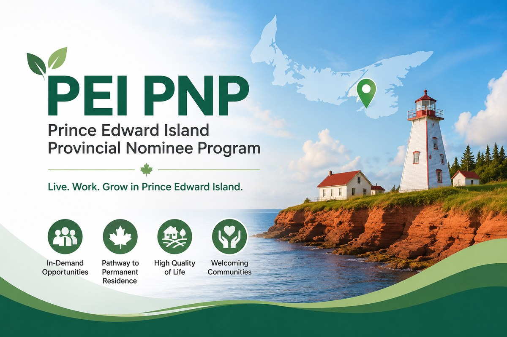

爱德华王子岛省PEI最新抽选发出181份邀请： 医疗、技工和制造业继续优先
Read in English
爱德华王子岛省（PEI）于2026年8月20日进行了 今年第八轮Expression of Interest（EOI）抽选， 共发出181份邀请。
本轮所有邀请均属于 Labour及Express Entry类别， 没有向Business Work Permit Entrepreneur 类别发出邀请。
截至2026年8月20日， PEI在今年已经累计发出 1,034份邀请。
哪些申请人目前更有机会？
PEI目前的选择方向已经越来越明确。
省政府目前主要优先考虑 能够满足当地劳动力市场需求的申请人， 特别包括以下领域：
- Healthcare： 医疗及健康相关行业；
- Trades： 技工行业；
- Manufacturing： 制造业；
- 其他面临明显劳动力短缺的重要行业。
这意味着，在目前省提名名额有限的环境下， 申请人的职业以及所在行业是否符合PEI当前的 劳动力市场和经济优先方向， 已经成为判断申请机会的重要因素。
Sales and Service行业目前可能不会获得邀请
对于准备申请PEI省提名的人来说， 另外一个尤其值得注意的信息， 是PEI已经表示： Sales and Service行业的申请人 目前可能不会获得邀请。
这一点非常重要。
过去，很多申请人在判断PEI PNP机会时， 主要关注自己的EOI分数。
但是在目前有限的省提名配额环境下， 仅仅达到项目基本资格， 或者拥有一个看起来具有竞争力的EOI分数， 并不代表一定能够收到邀请。
对PEI PNP申请人而言， 现在不能只看“是否符合资格”和“EOI多少分”， 还必须看自己的职业和行业 是否属于PEI当前优先选择的领域。
PEI的抽选重点正在越来越明确
PEI目前的抽选方式反映了 加拿大省提名计划近年来越来越明显的一个趋势：
省政府不再仅仅按照一个统一的EOI分数 从高到低选择申请人， 而是越来越强调 劳动力市场需求和经济优先方向。
对申请人来说， 这意味着即使两个人的EOI分数相近， 如果一个申请人的职业属于医疗、 技工或制造业等优先领域， 而另一个申请人属于目前并非重点邀请的行业， 两个人获得邀请的机会可能会非常不同。
因此， 在评估PEI PNP的时候， 职业类别和行业的重要性正在明显增加。
PEI今年尚未邀请企业家
另外一个值得关注的现象， 是PEI的Business Work Permit Entrepreneur类别。
截至2026年8月20日， PEI今年已经累计发出1,034份邀请， 但Business Work Permit Entrepreneur类别 仍然没有发出任何邀请。
这对于正在考虑PEI企业家移民的人来说 是一个值得注意的信号。
一个移民项目仍然存在， 并不等于该项目一定会在近期进行抽选。
对考虑PEI企业家类别的申请人而言， 目前更适合继续观察后续政策及抽选情况， 而不应仅仅因为项目仍然开放， 就假设短期内一定能够获得邀请。
现在评估PEI PNP，应该看什么？
对于目前正在考虑PEI省提名的申请人来说， 一个完整的评估不应该只停留在EOI分数。
更重要的是结合以下因素一起判断：
- 申请人的具体职业；
- 所在行业是否属于PEI当前优先领域；
- 是否在PEI当地工作；
- 是否拥有符合要求的PEI雇主及工作机会；
- 是否符合Labour或Express Entry 相关类别的基本资格；
- EOI整体竞争力；
- 当前PEI省提名名额及抽选方向。
尤其是在当前PEI明确优先医疗、 技工、制造业以及其他劳动力短缺行业的情况下， 行业本身已经成为评估申请机会时 不可忽视的因素。
下一次计划抽选：2026年9月17日
根据PEI公布的抽选安排， 下一次计划中的Expression of Interest 抽选日期为：
September 17, 2026 | 2026年9月17日
不过需要注意， 即使PEI按照计划进行下一轮抽选， 具体会邀请哪些类别、 哪些行业以及多少申请人， 仍然需要等待当轮结果公布。
对准备申请PEI PNP的人而言， 与其只等待下一次抽选分数， 更重要的是提前判断自己的职业、 行业和整体背景 是否符合PEI目前的选择方向。
PEI Issues 181 Invitations: Healthcare, Trades and Manufacturing Remain Priorities
Prince Edward Island conducted its latest Expression of Interest draw on August 20, 2026, issuing 181 invitations.
All invitations were issued under the Labour and Express Entry categories.
No invitations were issued under the Business Work Permit Entrepreneur category.
Following this draw, PEI had issued a total of 1,034 invitations in 2026.
Which Applicants Are Currently Being Prioritized?
PEI’s current selection priorities have become increasingly clear.
The province continues to prioritize candidates who can help address labour market shortages, particularly in areas such as:
- Healthcare;
- Trades;
- Manufacturing; and
- Other sectors experiencing significant labour shortages.
In the current environment of limited provincial nomination allocations, an applicant’s occupation and industry are becoming increasingly important when assessing the likelihood of receiving an invitation.
Sales and Service Candidates May Not Currently Be Invited
PEI has indicated that individuals working in the Sales and Service sector may not currently receive invitations.
This is an important consideration for applicants assessing their chances under the PEI Provincial Nominee Program.
In the past, many applicants focused primarily on their EOI score when evaluating their PEI PNP prospects.
However, simply meeting the eligibility requirements or having a competitive EOI profile does not necessarily mean that an applicant will receive an invitation.
Whether an applicant’s occupation and industry align with PEI’s current economic and labour market priorities has become an increasingly important factor.
PEI’s Selection Priorities Are Becoming More Targeted
PEI’s recent selection approach reflects a broader trend across provincial nominee programs.
Provinces are increasingly using immigration selection to respond directly to labour market and economic priorities, rather than relying exclusively on a general ranking score.
This means two candidates with similar EOI profiles may have very different prospects if one works in a priority sector while the other works in a sector that is not currently being targeted.
For PEI PNP candidates, occupation and industry alignment should therefore form part of any realistic assessment of their immigration strategy.
No Entrepreneur Invitations So Far in 2026
Another notable development is the absence of invitations under PEI’s Business Work Permit Entrepreneur category.
As of the August 20 draw, PEI had issued 1,034 invitations in 2026, but none under the Business Work Permit Entrepreneur category.
Applicants considering PEI’s entrepreneur pathway should therefore continue to monitor future selections.
The fact that an immigration stream remains available does not necessarily mean that invitations will be issued in the short term.
Applicants considering PEI’s entrepreneur pathway should pay attention to future draw activity before making assumptions about the likelihood or timing of an invitation.
What Should Applicants Consider When Assessing PEI PNP?
A realistic PEI PNP assessment should look beyond the EOI score alone.
Important considerations may include:
- the applicant’s occupation;
- whether the industry aligns with PEI’s current priorities;
- current employment in Prince Edward Island;
- the employer and job offer;
- eligibility under the applicable Labour or Express Entry category;
- the overall EOI profile; and
- PEI’s current nomination allocation and selection priorities.
With PEI currently prioritizing healthcare, trades, manufacturing and other sectors facing labour shortages, the applicant’s occupation and industry have become particularly important.
Next Scheduled PEI EOI Draw: September 17, 2026
PEI’s next scheduled Expression of Interest draw is September 17, 2026.
Next scheduled draw: September 17, 2026
The scheduled date itself does not indicate which categories, occupations or industries will be selected in the next round.
Applicants should therefore assess whether their occupation, industry and overall profile align with PEI’s current priorities rather than focusing only on the timing of the next draw.